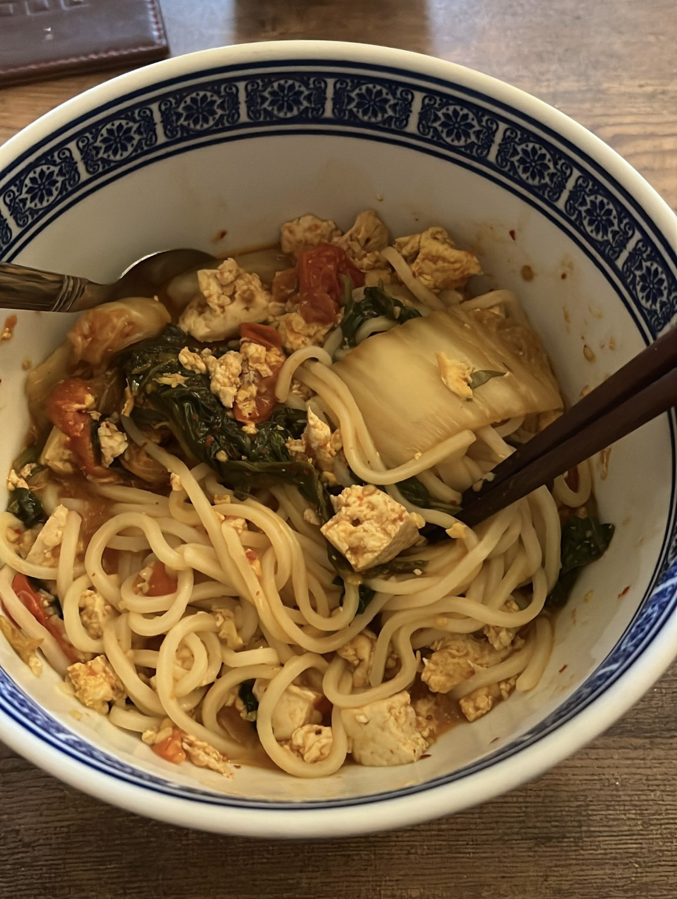

These are THE best noodles
These are my mom's noodles that she would always make for me as a child.
It has become my comfort meal now that I always make when I miss home.
It's a traditional household Chinese noodle recipe, consisting of veggies
and proteins with a hearty broth!
Ingredients
tomatoes (2 to 3)
eggs
tofu
soysauce
sesame oil
garlic
soft noodles
Instructions
Cut up tomatoes into a pan and let them simmer until juicy
Add a splash of extra water and soy sauce
Scramble eggs in a separate pan and then add them to the tomatoes pan
Cut up your tofu and then also add to the tomatoes pan
Let your tomatoes pan with the eggs and tofu sit and turn off the
stove. Put a lid on top of the pan to keep it warm
Boil water in a separate pot
Once water is boiled, add your soft noodles into the pot and let sit
for
10 minutes, stirring occasionally
Once noodles are ready, strain them and put them in a bowl and add the
tomatoes, eggs, and tofu mixture over the noodles
Add sesame oil and minced garlic to top off your noodles! (chilli oil
is also a plus)